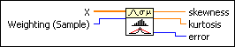

Skewness and Kurtosis VI
Owning Palette: Probability & Statistics VIs
Requires: Base Development System
Computes the skewness and kurtosis of the input sequence X.
Skewness is a measurement of symmetry. Kurtosis is the peak measurement of a distribution.

 Add to the block diagram Add to the block diagram |
 Find on the palette Find on the palette |